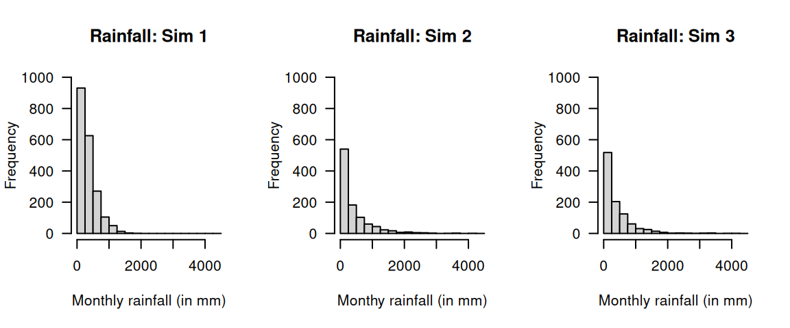
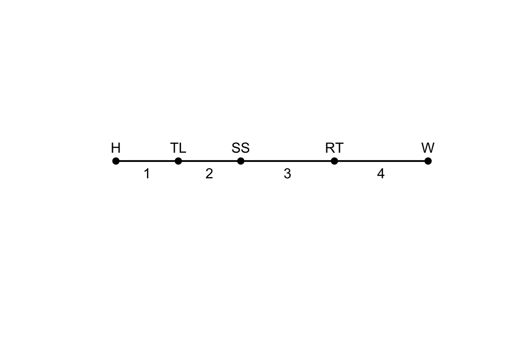
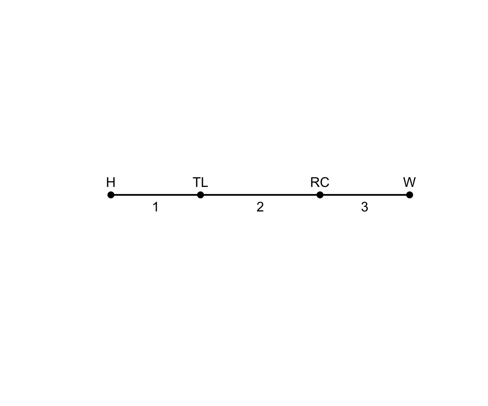

11 Multivariate distributions*
On completion of this chapter you should be able to:
- apply the concept of multivariate random vectors.
- compute joint probability functions and the distribution function for multivariate random vectors.
- find the marginal and conditional probability functions of random vectors in both discrete and continuous cases.
- compute the expectation and variance of linear combinations of random variables.
- interpret and compute the covariance and the coefficient of correlation between two random variables.
- compute the conditional mean and conditional variance of a random variable for some given value of another random variable.
- use the multinomial distribution.
- compute the expectation and variance of random vectors.
- compute the conditional mean and conditional variance of a random variable for some given value of another random variable.
11.1 Introduction
Not all random processes are sufficiently simple to have the outcome denoted by a single variable \(X\). Many situations require observing two or more numerical characteristics simultaneously. This chapter mainly discusses the two-variable (bivariate) case, but also discusses the multivariable (more than two variables) case using matrix notation (Sect. 11.2).
11.2 Multivariate random variables and matrix notation
So far, we have studied univariate random variables (i.e., a single random variable) and bivariate random variables (two jointly distributed random variables). These ideas can be extended to more random variables; the case of multivariate random variables, where several random variables are considered simultaneously.
To do this, using random vectors is convenient. A random vector is a column vector of \(n\) random variables: \[ \mathbf{X} = \begin{bmatrix} X_1\\ X_2\\ \dots\\ X_n \end{bmatrix} = [X_1, X_2, \dots, X_n]^T, \] where the superscript \(T\) means ‘transpose’. Each \(X_i\) is a random variable, and together they form an \(n\)-dimensional random vector. In the bivariate case, for example: \[ \mathbf{X} = \begin{bmatrix} X_1 \\ X_2 \end{bmatrix}. \]
The \(n\) random variables do not have to have the same distribution, though this is common. For example, a common scenario is for \(n\) random variables all being drawn from the same population (see, for example, Chap. 12).
Example 11.1 (Random vector) Consider the random vector \(\mathbf{X} = (X_1, X_2, X_3)\) representing the outcome of independently rolling three fair six-sided dice. Then, \[ X_i \sim \text{Discrete uniform}(1, 6) \] for \(i = 1, 2, 3\). Each component has the same distribution, but the outcome from the three rolls may be different.
Example 11.2 (Random vector) Consider rolling four fair, six-sided dice independently. Define the random vector \(\mathbf{Y} = (Y_1, Y_2, Y_3, Y_4)\), where \(Y_i\) is the roll on which the \(i\)th occurrence of a six is observed when repeatedly rolling die \(i\). (For example, \(Y_3\) is the roll on which the third six is observed on Die 3.)
Then, \[ Y_i \sim \text{Negative binomial}(i, p = 1/6)\quad\text{for $y_i = i, i + 1, i + 2, \dots$} \] for \(i = 1, 2, 3, 4\), where the alternative parameterisation of the negative binomial distribution (Sect. 6.6.3) has been used. The components have different negative binomial distributions, and different support: \[ S_{Y_i} = \{i, i + 1, i +2, \dots\}. \]
11.3 Joint probability functions
The joint probability function of \(\mathbf{X}\) describes the probability distribution for all \(n\) random variables simultaneously.
Definition 11.1 (Joint probability function (discrete)) Let \(\mathbf{X} = (X_1, \dots, X_n)\) be an \(n\)-dimensional discrete random variable. The random variable \(X_j\) (for \(j = 1, \dots, n\)) takes values in some set \(S_j\) (the range).
Then, the range of the random vector is \[ \mathcal{X} \subseteq S_1\times \cdots \times S_n. \] The joint probability mass function is \[ p_{\mathbf{X}}(\mathbf{x}) = \Pr(\mathbf{X} = \mathbf{x}) \quad \text{for $\mathbf{x} \in \mathcal{X}$}, \] such that \[ p_{\mathbf{X}}(\mathbf{x}) \geq 0 \quad \text{for all $\mathbf{x}) \in \mathcal{X}$}, \] and \[ \sum_{\mathbf{x} \in \mathcal{X}} p_{\mathbf{X}}(\mathbf{x}) = 1. \] The support is \[ \{\mathbf{x} \in \mathcal{X}: p_{\mathbf{X}}(\mathbf{x}) > 0\}. \]
Example 11.3 (Three dice) Consider the random vector \(\mathbf{X} = (X_1, X_2, X_3)\) representing the outcome of rolling three fair six-sided dice (Example 11.1).
Since each \(X_j \in \{1, 2, 3, 4, 5, 6\}\), the range is \[ \mathcal{X} = \{1, 2, 3, 4, 5, 6\} \times \{1, 2, 3, 4, 5, 6\} \times \{1, 2, 3, 4, 5, 6\}. \] Since the dice rolls are independent, the joint probability mass function is \[\begin{align*} p_{X_1, X_2, X_3}(x_1, x_2, x_3) &= \Pr(X_1 = x_1, X_2 = x_2, X_3 = x_3)\\ &= \Pr(X_1 = x_1)^3 = \frac{1}{6^3} = \frac{1}{216} \end{align*}\] for \((x_1, x_2, x_3) \in \mathcal{X}\).
For instance, the probability that the sum of the three dice equals \(10\) is \[ \Pr(X_1 + X_2 + X_3 = 10) = \sum_{\substack{(x_1, x_2, x_3) \in \mathcal{X}\\ x_1 + x_2 + x_3 = 10}} p(x_1,x_2,x_3). \]
To obtain the answer in R, use:
# List all possible outcomes of rolling three dice
dice_Outcomes <- expand.grid(x1 = 1:6,
x2 = 1:6,
x3 = 1:6)
# Show the first few rows (outcomes)
print(head(dice_Outcomes))
#> x1 x2 x3
#> 1 1 1 1
#> 2 2 1 1
#> 3 3 1 1
#> 4 4 1 1
#> 5 5 1 1
#> 6 6 1 1
# Find where the rows sum to 10
favourable_Outcome <- rowSums(dice_Outcomes) == 10
# Probability
prob <- sum(favourable_Outcome) / nrow(dice_Outcomes)
prob
#> [1] 0.125For continuous random vectors, the definition is similar.
Definition 11.2 (Joint probability function (continuous)) Let \(\mathbf{X} = (X_1, \dots, X_n)\) be an \(n\)-dimensional continuous random vector. For each \(j = 1, \dots, n\), the random variable \(X_j\) takes values in a subset \(S_j \subseteq \mathbb{R}\).
The range of \(\mathbf{X}\) is \[ \mathcal{X} \subseteq S_1 \times \cdots \times S_n \subseteq \mathbb{R}^n. \] The joint probability density function of \(\mathbf{X}\) is a function \[ f_{X_1, \dots, X_n}(x_1, \dots, x_n), \quad \text{for $(x_1, \dots, x_n) \in \mathcal{X}$}, \] such that, for every region \(A\subseteq \mathcal{X}\), \[ \Pr(\mathbf{X}\in A) = \int_A f_{X_1, X_2, \dots, X_n}(x_1, x_2, \dots, x_n)\, dx_1\, dx_2\dots dx_n. \] The density satisfies \[ f_{X_1, \dots, X_n}(x_1, \dots, x_n) \geq 0 \quad \text{for all $(x_1, \dots, x_n) \in \mathcal{X}$}, \] and \[ \int_{\mathcal{X}} f_{X_1, \dots, X_n}(x_1, \dots, x_n)\, dx_1 \cdots dx_n = 1. \] The support of \(\mathbf{X}\) is \[ \{\mathbf{x}\in\mathcal{X}: f_\mathbf{X}(\mathbf{x}) > 0\}. \]
Example 11.4 (Three-dimensional uniform example (continuous)) Consider the random vector \(\mathbf{X} = (X_1, X_2, X_3)\), uniformly distributed on the unit cube \([0, 1]^3\).
The range is
\[
\mathcal{X} = [0, 1] \times [0, 1] \times [0, 1] \subset \mathbb{R}^3.
\]
The joint probability density function is: \[ f_{X_1, X_2, X_3}(x_1,x_2,x_3) = \begin{cases} 1 & \text{for $0 \le x_j \le 1$ for all $j = 1, 2, 3$},\\ 0 & \text{otherwise}. \end{cases} \]
The marginal distributions are all uniform on \([0, 1]\); for example: \[ f_{X_1}(x_1) = \int_0^1 \int_0^1 f(x_1, x_2, x_3)\, dx_2\, dx_3 = 1, \quad 0\le x_1 \le 1. \]
For instance, the probability that the sum of the three variables is less than or equal to \(1\) is \[ \Pr(X_1 + X_2 + X_3 \le 1) = \text{volume of tetrahedron } \{(x_1,x_2,x_3)\in\mathcal{X}: x_1 + x_2 + x_3 \le 1\} = \frac{1}{6}. \]
The answer can be obtained using integration, knowledge of volumes, or using a simulation in R:
set.seed(30991) # For reproducibility
# Generate 1 000 000 random points in each dimension of the cube
N <- 1e6
X <- matrix(runif(3 * N),
ncol = 3) # N rows of (x1,x2,x3)
print(head(X))
#> [,1] [,2] [,3]
#> [1,] 0.01910142 0.876909934 0.1347004
#> [2,] 0.41801207 0.146094920 0.5405445
#> [3,] 0.86790140 0.008614253 0.6262534
#> [4,] 0.20781771 0.648519075 0.2852823
#> [5,] 0.07213365 0.119805842 0.6374308
#> [6,] 0.70971854 0.642130898 0.1407279
# How many of these random points satisfy: sum less than one?
prob_Est <- mean(rowSums(X) <= 1)
prob_Est
#> [1] 0.16645711.4 Marginal and conditional distributions
Marginal distributions are obtained by summing or integrating out unwanted variables. For example, \[ f_{X_1}(x_1) = \int_{\mathbb{R}^{n-1}} f_{X_1, X_2, \dots, X_n}(x_1, x_2, \dots, x_n)\, dx_2 \cdots dx_n. \]
Conditional distributions are defined in the natural way: \[ f_{X_1 \mid X_2, \dots, X_n}(x_1 \mid x_2, \dots, x_n) = \frac{f_{X_1 , X_2, \dots, X_n}(x_1, x_2, \dots, x_n)}{f_{X_2,\dots,X_n}(x_2, \dots, x_n)}. \]
EXAMPLES
11.5 Joint distribution functions
The multivariate distribution function (CDF) is \[ F_{X_1, \dots, X_n}(x_1, \dots, x_n) = \Pr(X_1 \leq x_1, \dots, X_n \leq x_n). \]
(#exm:Dice3D_CDF) (Three dice) Let \(\mathbf{X} = (X_1, X_2, X_3)\) be the random vector representing the outcome of rolling three fair six-sided dice, as in Example 11.3 (where the joint probability mass function is given).
The joint cumulative distribution function is \[ F_{X_1, X_2, X_3}(x_1, x_2, x_3) = \Pr(X_1 \le x_1, X_2 \le x_2, X_3 \le x_3) = \sum_{i = 1}^{\lfloor x_1 \rfloor} \sum_{j = 1}^{\lfloor x_2 \rfloor} \sum_{k = 1}^{\lfloor x_3 \rfloor} p(i, j, k), \] where \(\lfloor x \rfloor\) is the floor function (the greatest integer less than or equal to \(x\)).
For instance, the probability that all dice shows less than or equal to \(3\) is \[ F_{X_1, \dots, X_n}(3, 3, 3) = \sum_{i = 1}^{3} \sum_{j = 1}^{3} \sum_{k = 1}^{3} \frac{1}{216} = \frac{27}{216} = \frac{1}{8}. \]
(#exm:UniformCube3D_CDF) (Three-dimensional uniform cube: CDF) Let \(\mathbf{X} = (X_1, X_2, X_3)\) be uniformly distributed on the unit cube \([0, 1]^3\), as in Example 11.4 (where the joint probability density function is given)
The joint cumulative distribution function is \[\begin{align*} F_{X_1, \dots, X_n}(x_1, x_2, x_3) &= \Pr(X_1 \le x_1, X_2 \le x_2, X_3 \le x_3)\\ &= \int_0^{x_1}\!\! \int_0^{x_2}\!\! \int_0^{x_3} f(u_1, u_2, u_3)\, du_3\, du_2\, du_1, \end{align*}\] for \(0 \le x_1, x_2, x_3 \le 1\).
For instance, the probability that each variable is less than \(0.5\) is \[ Fvs(0.5, 0.5, 0.5) = \int_0^{0.5}\!\! \int_0^{0.5}\!\! \int_0^{0.5} 1 \, du_3\, du_2\, du_1 = 0.5^3 = 0.125. \]
11.6 Multivariate independence
In the multivariate case, \(n\) random variables \(X_1, \dots, X_n\) are independent if knowing the value of any subset of them gives no information about the others. Formally, let \(\mathbf{X} = (X_1, \dots, X_n)\) be an \(n\)-dimensional random vector with joint probability distribution.
In the discrete case, the random variables are independent if and only if the joint probability mass function factors as the product of the marginal probability functions: \[ p_{X_1, \dots, X_n}(x_1, \dots, x_n) = \prod_{i = 1}^{n} p_{X_i}(x_i), \quad (x_1, \dots, x_n) \in \mathcal{X}. \]
The continuous case is similar; the random variables are independent if and only if the joint probability density function factors as the product of the marginal densities: \[ f_{X_1, \dots, X_n}(x_1, \dots, x_n) = \prod_{i = 1}^{n} f_{X_i}(x_i), \quad (x_1, \dots, x_n) \in \mathcal{X}. \]
Independence can also be determined using the distribution functions: \[ F_{X_1, \dots, X_n}(x_1, \dots, x_n) = \prod_{i=1}^{n} F_{X_i}(x_i), \] where \(F\) is the joint cumulative distribution function.
In practice, independence allows joint probabilities or volumes to be computed by multiplying the corresponding marginal probabilities or integrating products of marginal densities.
(#exm:Dice3D_Indep) (Three dice example: independence) Consider the outcomes of rolling three fair six-sided dice, represented by the random vector \(\mathbf{X} = (X_1, X_2, X_3)\).
Each \(X_j \in \{1,2,3,4,5,6\}\), so \(\mathcal{X} = \{1,\dots,6\}^3\).
The dice are independent, so the joint probability mass function can be written as the product of the marginal probability functions:
\[
p_{X_1, X_2, X_3}(x_1, x_2, x_3)
= \Pr(X_1 = x_1, X_2 = x_2, X_3 = x_3)
= \prod_{i = 1}^3 \Pr(X_i = x_i)
= \frac{1}{6}\cdot \frac{1}{6} \cdot \frac{1}{6} = \frac{1}{216}.
\]
Equivalently, the joint distribution factors as
\[
F_{X_1, X_2, X_3}(x_1, x_2, x_3) = \Pr(X_1\le x_1, X_2 \le x_2, X_3 \le x_3)
= \prod_{i = 1}^3 F_{X_i}(x_i).
\]
The probability that all dice show a value less than or equal to \(3\) is
\[
F_{X_1, \dots, X_n}(3, 3, 3)
= \prod_{i = 1}^3 F_{X_i}(3)
= \left(\frac{3}{6}\right)^3
= \frac{27}{216} = \frac{1}{8}.
\]
(#exm:UniformCube3D_Indep) (Three-dimensional uniform cube: independence) Let \(\mathbf{X} = (X_1, X_2, X_3)\) be uniformly distributed on the unit cube \([0, 1]^3\), with joint probability density function \[ f_{X_1, X_2, X_3}(x_1, x_2, x_3) = 1, \quad (x_1, x_2, x_3) \in [0, 1]^3. \]
The variables \(X_1, X_2, X_3\) are independent, so the joint density function can be written as \[ f(x_1, x_2, x_3) = f_{X_1}(x_1)\cdot f_{X_2}(x_2)\cdot f_{X_3}(x_3) = 1 \cdot 1 \cdot 1. \]
Equivalently, the joint distribution can be written as \[ F_{X_1, X_2, X_3}(x_1, x_2, x_3) = \Pr(X_1 \le x_1, X_2 \le x_2, X_3 \le x_3) = \prod_{i = 1}^3 F_{X_i}(x_i). \]
For example, the probability that the values of all three variables are less than \(0.5\) is \[ F_{X_1, X_2, X_3}(0.5, 0.5, 0.5) = 0.5^3 = 0.125. \]
11.7 Expectation and covariance
Each variable \(X_i\) in a random vector has a mean \(\operatorname{E}[X_i]\) and variance \(\operatorname{var}[X_i]\). Consider a random vector of \(n\) random variables \(X_i\); then the mean vector of \(\mathbf{X} = [X_1, \dots, X_n]^T\) is \[ \boldsymbol{\mu} = \operatorname{E}[\mathbf{X}] = \begin{bmatrix} \operatorname{E}[X_1] \\ \vdots \\ \operatorname{E}[X_n] \end{bmatrix} = \begin{bmatrix} \mu_1 \\ \vdots \\ \mu_n \end{bmatrix}. \]
The variance of each variable \(X_i\) can be found, so we can write \[ \boldsymbol{\sigma}^2 = \operatorname{var}[\mathbf{X}] = \begin{bmatrix} \operatorname{var}[X_1] \\ \vdots \\ \operatorname{var}[X_n] \end{bmatrix} = \begin{bmatrix} \sigma_1^2 \\ \vdots \\ \sigma_n^2 \end{bmatrix}. \]
The covariance between each pair of random variables can also be computed (Sect. 10.9). The variances and covariances are conveniently compiled into a \(n\times n\) covariance matrix: \[\begin{align*} \Sigma = \text{Cov}(\mathbf{X}) = \operatorname{E}\left[(\mathbf{X} - \boldsymbol{\mu})(\mathbf{X} - \boldsymbol{\mu})^T\right] = \begin{bmatrix} \sigma_1^2 & \operatorname{Cov}(X_1, X_2) & \dots & \operatorname{Cov}(X_1, X_n)\\ \operatorname{Cov}(X_2, X_1) & \sigma_2^2 & \dots & \operatorname{Cov}(X_2, X_n)\\ \vdots & \vdots & \ddots & \vdots\\ \operatorname{Cov}(X_n, X_1) & \operatorname{Cov}(X_n, X_2) & \dots & \sigma_n^2\\ \end{bmatrix} \end{align*}\] The entries are \(\Sigma_{ij} = \text{Cov}(X_i, X_j)\). The diagonal entries are the variances \[ \Sigma_{ii} = \text{Cov}(X_i, X_i) = \sigma_i^2, \] while the off-diagonal entries are covariances. Since \(\operatorname{Cov}(X_i, X_j) = \operatorname{Cov}(X_j, X_i)\), \(\mathbf{\Sigma}\) is symmetric.
The correlation matrix \(\mathbf{\rho}\) is obtained by normalisation, with element \((i, j)\) found as \[ \rho_{ij} = \frac{\Sigma_{ij}}{\sqrt{\Sigma_{ii}\,\Sigma_{jj}}}. \]
Results involving expectations naturally generalise from the bivariate to the multivariate case. Firstly, the expectation of a linear combination of random variables.
Theorem 11.1 (Expectation of linear combinations) If \(X_1, X_2,\dots, X_n\) are random variables and \(a_1, a_2,\ldots a_n\) are any constants then \[ \operatorname{E}\left[\sum_{i = 1}^n a_i X_i \right] = \sum_{i = 1}^n a_i \, \operatorname{E}[X_i] = \sum_{i = 1}^n a_i \, \mu_i \] Using vector notation, \[\begin{equation} \operatorname{E}[\mathbf{a}^T\mathbf{X}] = [a_1, a_2] \begin{bmatrix} \mu_1 \\ \mu_2 \end{bmatrix} = \mathbf{a}^T\boldsymbol{\mu} \end{equation}\]
Proof. The proof follows directly from Theorem 10.2 by induction.
The variance of a linear combination of random variables is given in the following theorem.
Theorem 11.2 (Variance of a linear combination) If \(X_1, X_2, \dots, X_n\) are random variables and \(a_1, a_2,\ldots a_n\) are any constants then \[ \operatorname{var}\left[\sum_{i = 1}^n a_i X_i \right] = \sum^n_{i = 1}a^2_i\operatorname{var}[X_i] + 2{\sum\sum}_{i<j}a_i a_j\operatorname{Cov}(X_i, X_j). \] Using vector notation, \[\begin{align} \operatorname{var}[Y] = \operatorname{var}[\mathbf{a}^T\mathbf{X}\mathbf{a}] = [a_1, a_2] \begin{bmatrix} \sigma^2_1 & \sigma_{12} \\ \sigma_{21}& \sigma^2_2 \end{bmatrix} \begin{bmatrix} a_1 \\ a_2 \end{bmatrix} = \mathbf{a}^T\mathbf{\Sigma}\mathbf{a}. \end{align}\]
Proof. For convenience, put \(Y = \sum_{i = 1}^n a_iX_i\). Then by definition of variance \[\begin{align*} \operatorname{var}[Y] &= \operatorname{E}\big[Y - \operatorname{E}[Y]\big]^2\\ &= \operatorname{E}[a_1 X_1 + \dots + a_n X_n - a_1\mu_1 - \dots a_n\mu_n]^2\\ &= \operatorname{E}[a_1(X_1 - \mu_1) + \dots + a_n(X_n - \mu_n)]^2\\ &= \operatorname{E}\left[ \sum_i a^2_i(X_i - \mu_i)^2 + 2\sum_{i < j}a_i a_j(X_i - \mu_i)X_j - \mu_j)\right]\\ &= \sum_i a^2_i\operatorname{E}[X_i - \mu_i]^2 + 2\sum_{i < j}a_i a_j\operatorname{E}[X_i - \mu_i] (X_j - \mu_j)\\ %\quad \text{using Theorem\ \@ref(thm:ExpLinear)}\\ &= \sum_i a^2_i\sigma^2_i + 2\sum_{i<j}a_i a_j\operatorname{Cov}(X_i, X_j). \end{align*}\]
In statistical theory, an important special case of Theorem 11.2 occurs when the \(X_i\) are independently and identically distributed (iid). That is, each of \(X_1, X_2, \dots, X_n\) has the same distribution and are independent of each other. (We see the relevance of this in Chap. 12.4.) Because of its importance this special case is called a corollary of Theorems 11.1 and 11.2.
Corollary 11.1 (iid rvs) If \(X_1, X_2, \dots, X_n\) are independently distributed (iid) random variables, each with mean \(\mu\) and variance \(\sigma^2\), and \(a_1, a_2,\ldots a_n\) are any constants, then \[\begin{align*} \operatorname{E}\left[\sum_{i = 1}^n a_i X_i \right] &= \mu\sum_{i = 1}^n a_i;\\ \operatorname{var}\left[\sum_{i = 1}^n a_i X_i \right] &= \sigma^2\sum^n_{i = 1}a^2_i. \end{align*}\] Using vector notation, \[\begin{align*} \operatorname{E}\left[\mathbf{a}\mathbf{X}\right] &= \mathbf{a}^T \mathbf{\mu};\\ \operatorname{var}\left[\mathbf{\sigma}^2 \right] &= \mathbf{a}^T \mathbf{\sigma}^2 \mathbf{a}. \end{align*}\]
Proof. Exercise.
The components \(X_1, \dots, X_n\) are independent if and only if \[ f(x_1, \dots, x_n) = \prod_{i = 1}^n f_{X_i}(x_i); \] that is, if \(\mathbf{\Sigma}\) is a diagonal matrix.
Vector formulation allows statements to be made about any number of random variables simultaneouslh. In addition, the vector formulation allows easy implementation in vector-based computer programming used by packages such as R.
One further result is presented (without proof) involving two linear combinations.
Theorem 11.3 (Covariance of combinations) If \(\mathbf{X}\) is a random vector of length \(n\) with mean \(\boldsymbol{\mu}\) and variance \(\mathbf{\Sigma}\), and \(\mathbf{a}\) and \(\mathbf{b}\) are any constant vectors, each of length \(n\), then \[ \operatorname{Cov}(\mathbf{a}^T\mathbf{X},\mathbf{b}^T\mathbf{X}) = \mathbf{a}^T\mathbf{\Sigma}\mathbf{b}. \]
Example 11.5 (Expectations using vectors) Suppose the random variables \(X_1, X_2, X_3\) have respective means \(1\), \(2\), and \(3\), respective variances \(4\), \(5\), and \(6\), and covariances \(\operatorname{Cov}(X_1, X_2) = -1\), \(\operatorname{Cov}(X_1, X_3) = 1\) and \(\operatorname{Cov}(X_2, X_3) = 0\).
Consider the random variables \(Y_1 = 3X_1 + 2X_2 - X_3\) and \(Y_2 = X_3 - X_1\). Determine \(\operatorname{E}[Y_1]\), \(\operatorname{E}[Y_2]\), \(\operatorname{var}[Y_1]\), \(\operatorname{var}[Y_2]\) and \(\operatorname{Cov}(Y_1,Y_2)\).
A vector formulation of this problem allows us to use Theorem 11.3 directly. Putting \(\mathbf{a}^T = [3, 2, -1]\) and \(\mathbf{b}^T = [-1, 0, 1]\): \[ Y_1 = \mathbf{a}^T\mathbf{X} \quad\text{and}\quad Y_2 = \mathbf{b}^T\mathbf{X} \] where \(\mathbf{X}^T = [X_1, X_2, X_3]\). Also define \(\boldsymbol{\mu}^T = [1, 2, 3]\) and \(\mathbf{\Sigma} = \begin{bmatrix} 4 & -1 & 1\\ -1 & 5 & 0\\ 1 & 0 & 6 \end{bmatrix}\) as the mean and variance–covariance matrix respectively of \(\mathbf{X}\). Then \[ \operatorname{E}[Y_1] = \mathbf{a}^T\boldsymbol{\mu} = [3, 2, -1] \begin{bmatrix} 1\\ 2\\ 3 \end{bmatrix} = 4 \] and \[ \operatorname{var}[Y_1] = \mathbf{a}^T\mathbf{\Sigma}\mathbf{a} = [3, 2, -1] \begin{bmatrix} 4 & -1 & 1\\ -1 & 5 & 0\\ 1 & 0 & 6 \end{bmatrix} \begin{bmatrix} 3\\ 2\\ -1 \end{bmatrix} = 44. \] Similarly \(\operatorname{E}[Y_2] = 2\) and \(\operatorname{var}[Y_2] = 8\). Finally: \[ \operatorname{Cov}(Y_1, Y_2) = \mathbf{a}^T\mathbf{\Sigma}\mathbf{b} = [3, 2, -1]^T \begin{bmatrix} 4 & -1 & 1\\ -1 & 5 & 0\\ 1 & 0 & 6 \end{bmatrix} \begin{bmatrix} -1\\ 0\\ 1 \end{bmatrix} = -12. \]
11.8 Multinomial distribution
A specific example of a discrete multivariate distribution is the multinomial distribution, a generalization of the binomial distribution.
Definition 11.3 (Multinomial distribution) Consider an experiment with the the sample space partitioned as \(S = \{B_1, B_2, \ldots, B_k\}\). Let \(p_i = \Pr(B_i), \ i = 1, 2,\ldots k\) where \(\sum_{i = 1}^k p_i = 1\). Suppose there are \(n\) repetitions of the experiment in which \(p_i\) is constant. Let the random variable \(X_i\) be the number of times (in the \(n\) repetitions) that the event \(B_i\) occurs. In this situation, the random vector \((X_1, X_2, \dots, X_k)\) is said to have a multinomial distribution with probability function \[\begin{equation} \Pr(X_1 = x_1, X_2 = x_2, \ldots, X_k = x_k) = \frac{n!}{x_1! \, x_2! \ldots x_k!} p_1^{x_1}\, p_2^{x_2} \ldots p_k^{x_k}, \tag{11.1} \end{equation}\] where \(\mathcal{R}_X = \{(x_1, \ldots x_k) : x_i = 0,1,\ldots,n, \, i = 1, 2, \ldots k, \, \sum_{i = 1}^k x_i = n\}\).
The part of Eq. (11.1) involving factorials arises as the number of ways of arranging \(n\) objects, \(x_1\) of which are of the first kind, \(x_2\) of which are of the second kind, etc. The above distribution is \((k - 1)\)-variate since \(x_k = n-\sum_{i = 1}^{k - 1}x_i\). In particular if \(k = 2\), the multinomial distribution reduces to the binomial distribution, which is a univariate distribution.
\(X_i\) is the number of times (out of \(n\)) that the event \(B_i\), which has probability \(p_i\), occurs. So the random variable \(X_i\) clearly has a binomial distribution with parameters \(n\) and \(p_i\). Thus, the marginal probability distribution of one of the components of a multinomial distribution is a binomial distribution.
Notice that the distribution in Example 10.5 is an example of a trinomial distribution. The probabilities shown in Table 10.3 can be expressed algebraically as \[ \Pr(X = x, Y = y) = \frac{2!}{x! \, y!\, (2 - x - y)!} \left(\frac{1}{6}\right)^x\left(\frac{1}{6}\right)^y\left(\frac{2}{3}\right)^ {2 - x - y} \] for \(x, y = 0 , 1 , 2\); \(x + y \leq 2\).
The following are the basic properties of the multinomial distribution.
Theorem 11.4 (Multinomial distribution properties) Suppose \((X_1, X_2, \ldots, X_k)\) has the multinomial distribution given in Def. 11.3. Then for \(i = 1, 2, \ldots, k\):
- \(\operatorname{E}[X_i] = np_i\).
- \(\operatorname{var}[X_i] = n p_i(1 - p_i)\).
- \(\operatorname{Cov}(X_i, X_j) = -n p_i p_j\) for \(i \neq j\).
Proof. The first two results follow because \(X_i \sim \text{Bin}(n, p_i)\).
We will use \(x\) for \(x_1\) and \(y\) for \(x_2\) in the third for convenience. Consider only the case \(k = 3\), and note that \[ \sum_{(x, y) \in R} \frac{n!}{x! \, y! (n - x - y)!} p_1^x\, p_2^y\, (1 - p_1 - p_2)^{n - x - y} = 1. \] Then, putting \(p_3 = 1 - p_1 - p_2\), \[\begin{align*} \operatorname{E}[XY] &= \sum_{(x, y)} xy \Pr(X = x, Y = y)\\ &= \sum_{(x, y)}\frac{n!}{(x - 1)!(y - 1)!(n - x - y)!} p_1^x\, p_2^y\, p_3^{n - x - y}\\ &= n(n - 1) p_1 p_2\underbrace{\sum_{(x,y)}\frac{(n - 2)!}{(x - 1)!(y - 1)!(n - x - y)!} p_1^{x - 1}\, p_2^{y - 1}\, p_3^{n - x - y}}_{ = 1}. \end{align*}\] So \(\operatorname{Cov}(X, Y) = n^2 p_1 p_2 - n p_1 p_2 - (n p_1)(n p_2) = -n p_1 p_2\).
The two R functions for working with the multinomial distribution functions have the form [dr]multinom(size, prob) where size\({}= n\) and prob\({} = (p_1, p_2, \dots, p_k)\) for \(k\) categories (see App. E):
-
dmultinom(x, size, sprob)computes the probability function at \(X = {}\)x; -
rmultinom(n, size, prob)generatesnrandom numbers.
The functions qmultinom() and pmultinom() are not defined.
Example 11.6 (Multinomial distribution) Suppose the four basic blood groups O, A, B and AB are known to occur in the proportions \(9:8:2:1\). Given a random sample of \(8\) individuals, what is the probability that there will be \(3\) each of Types O and A and \(1\) each of Types B and AB?
The probabilities are \(p_1 = 0.45\), \(p_2 = 0.4\), \(p_3 = 0.1\), \(p_4 = 0.05\), and \[\begin{align*} \Pr(X_O = 3, X_A = 3, X_B = 1, X_{AB} = 1) &= \frac{8!}{3!\,3!\,1!\,1!}(0.45)^3 (0.4)^3 (0.1)(.05)\\ &= 0.033. \end{align*}\] In R:
11.9 Simulation
As with univariate distributions (Sects. 6.10 and 7.9), simulation can be used with bivariate distributions.
Random numbers from the bivariate normal distribution (Sect. 10.14) are generated using the function dmnorm() from the library mnorm.
Random numbers from the multinomial distribution (Sect. 11.8) are generated using the function rmultinom().
More commonly, univariate distributions are combined.
Monthly rainfall, for example, is commonly modelled using gamma distributions (for example, Husak et al. (2007)). Simulating rainfall is then used in others models (such as for cropping simulations; for example Ines and Hansen (2006)). As an example, consider a location where the monthly rainfall is well-modelled by a gamma distribution with a shape parameter \(\alpha = 1.6\) and a scale parameter of \(\beta = 220\) (Fig. 11.1, left panel):
library("mnorm") # Need to explicitly load mnorm library
MRain <- rgamma( 2000,
shape = 1.6,
scale = 220)
cat("Rainfall exceeding 900mm:",
sum(MRain > 900) / 2000 * 100, "%\n")
#> Rainfall exceeding 900mm: 4.95 %
# Directly:
round( (1 - pgamma(900, shape = 1.6, scale = 220) ) * 100, 2)
#> [1] 4.95The percentage of months with rainfall exceeding \(1000\,\text{mm}\) was also computed. However, now suppose that the shape parameter \(\alpha\) also varies, with an exponential distribution with mean \(2\) (Fig. 11.1, centre panel):
MRain2 <- rgamma( 1000,
shape = rexp(1000, rate = 1/2),
scale = 220)
cat("Rainfall exceeding 900mm:",
sum(MRain2 > 900) / 1000 * 100, "%\n")
#> Rainfall exceeding 900mm: 13.3 %Using simulation, it is also easy to simulate the impact of the scale parameter \(\beta\) varying also, suppose with a normal distribution mean of \(200\) and variance of \(16\) (Fig. 11.1, right panel):
MRain3 <- rgamma( 1000,
shape = rexp(1000, rate = 1/2),
scale = rnorm(1000, mean = 200, sd = 4))
cat("Rainfall exceeding 900:",
sum(MRain3 > 900) / 1000 * 100, "%\n")
#> Rainfall exceeding 900: 11.4 %
FIGURE 11.1: Three simulations using the gamma distribution.
11.10 Exercises
Selected answers appear in Sect. F.10.
Exercise 11.1 Let \(X_1, X_2\overset{\text{iid}}{\sim} N(0,1)\). Consider the polar coordinates as a bivariate transformation: \[ X_1 = R \cos(\Theta) \quad \text{and} \quad X_2 = R \sin(\Theta). \] 1. Calculate the Jacobian of the transformation. 2. Find the joint PDF in terms of \(r\) and \(\theta\). 3. Show that the resulting PDF can be factored into a function of \(r\) and a function of \(\theta\). What does that tell us about the independence of the radius and the angle? 3. Hence show that the bivariate normal distribution is a valid joint PDF.
Exercise 11.2 Suppose \(X_1, X_2, \dots, X_n\) are independently distributed random variables, each with mean \(\mu\) and variance \(\sigma^2\). Define the sample mean as \(\overline{X} = \left( \sum_{i=1}^n X_i\right)/n\).
- Prove that \(\operatorname{E}[\overline{X}] = \mu\).
- Find the variance of \(\overline{X}\).
Exercise 11.3 \(X\), \(Y\) and \(Z\) are uncorrelated random variables with expected values \(\mu_x\), \(\mu_y\) and \(\mu_z\) and standard deviations \(\sigma_x\), \(\sigma_y\) and \(\sigma_z\). \(U\) and \(V\) are defined by \[\begin{align*} U&= X - Z;\\ V&= X - 2Y + Z. \end{align*}\]
- Find the expected values of \(U\) and \(V\).
- Find the variance of \(U\) and \(V\).
- Find the covariance between \(U\) and \(V\).
- Under what conditions on \(\sigma_x\), \(\sigma_y\) and \(\sigma_z\) are \(U\) and \(V\) uncorrelated?
Exercise 11.4 Suppose \((X, Y)\) has joint probability function given by \[ \Pr(X = x, Y = y) = \frac{|x - y|}{11} \] for \(x = 0, 1, 2\) and \(y = 1, 2, 3\).
- Find \(\operatorname{E}[X \mid Y = 2]\).
- Find \(\operatorname{E}[Y \mid X\ge 1]\).
Exercise 11.5 The PDF of \((X, Y)\) is given by \[ f_{X, Y}(x, y) = 1 - \alpha(1 - 2x)(1 - 2y), \] for \(0 \le x \le 1\), \(0 \le y \le 1\) and \(-1 \le \alpha \le 1\).
- Find the marginal distributions of \(X\) and \(Y\).
- Evaluate the correlation coefficient \(\rho_{XY}\).
- For what value of \(\alpha\) are \(X\) and \(Y\) independent?
- Find \(\Pr(X < Y)\).
Exercise 11.6 The random variables \(X_1\), \(X_2\), and \(X_3\) have y
- \(X_1\): mean \(\mu_1 = 5\) with standard deviation \(\sigma_1 = 2\).
- \(X_2\): mean \(\mu_2 = 3\) with standard deviation \(\sigma_2 = 3\).
- \(X_3\): mean \(\mu_3 = 6\) with standard deviation \(\sigma_3 = 4\).
The correlations are: \(\rho_{12} = -\frac{1}{6}\), \(\rho_{13} = \frac{1}{6}\) and \(\rho_{23} = \frac{1}{2}\).
If the random variables \(U\) and \(V\) are defined by \(U = 2X_1 + X_2 - X_3\) and \(V = X_1 - 2X_2 - X_3\), find
- \(\operatorname{E}[U]\).
- \(\operatorname{var}[U]\).
- \(\operatorname{Cov}(U, V)\).
Exercise 11.7 Let \(X\) and \(Y\) be the body mass index (BMI) and percentage body fat for netball players attending the AIS. Assume \(X\) and \(Y\) have a bivariate normal distribution with \(\mu_X = 23\), \(\mu_Y = 21\), \(\sigma_X = 3\), \(\sigma_Y = 6\) and \(\rho_{XY} = 0.8\). Find
- the expected BMI of a netball player who has a percent body fat of \(30\).
- the expected percentage body fat of a netball player who has a BMI of \(19\).
Exercise 11.8 Let \(X\) and \(Y\) have a bivariate normal distribution with parameters \(\mu_x = 1\), \(\mu_y = 4\), \(\sigma^2_x = 4\), \(\sigma^2_y = 9\) and \(\rho = 0.6\). Find
- \(\Pr(-1.5 < X < 2.5)\).
- \(\Pr(-1.5 < X < 2.5 \mid Y = 3)\).
- \(\Pr(0 < Y < 8)\).
- \(\Pr(0 < Y < 8 \mid X = 0)\).
Exercise 11.9 Consider \(n\) random variables \(Z_i\) such that \(Z_i \sim \text{Exp}(\beta)\) for every \(i = 1, \dots, n\). Show that the distribution of \(Z_1 + Z_2 + \cdots + Z_n\) has a gamma distribution \(\text{Gamma}(n, \beta)\), and determine the parameters of this gamma distribution. (Hint: See Theorem 5.9.)
Exercise 11.10 Wilks (1995b) (p. 101) states that the maximum daily temperatures measured at Ithaca (\(I\)) and Canandaigua (\(C\)) in January 1987 are both symmetrical. He also says that the two temperatures could be modelled with a bivariate normal distribution with \(\mu_I = 29.87\), \(\mu_C = 31.77\), \(\sigma_I = 7.71\), \(\sigma_C = 7.86\) and \(\rho_{IC} = 0.957\). (All measurements are in degrees Fahrenheit.)
- Explain, in context, what a correlation coefficient of \(0.957\) means.
- Determine the marginal distributions of \(C\) and of \(I\).
- Find the conditional distribution of \(C\mid I\).
- Plot the PDF of Canandaigua maximum temperature.
- Plot the conditional PDF of Canandaigua maximum temperature given that the maximum temperature at Ithaca is \(25^\circ\)F.
- Comment on the differences between the two PDFs plotted above.
- Find \(\Pr(C < 32 \mid I = 25)\).
- Find \(\Pr(C < 32)\).
- Comment on the differences between the last two answers.
- If temperature were measured in degrees Celsius instead of degrees Fahrenheit, how would the value of \(\rho_{IC}\) change?
Exercise 11.11 The discrete random variables \(X\) and \(Y\) have the joint probability distribution shown in the following table:
| Value of \(x\) | \(y = 1\) | \(y = 2\) | \(y = 3\) |
|---|---|---|---|
| \(x = 0\) | 0.20 | 0.15 | 0.05 |
| \(x = 1\) | 0.20 | 0.25 | 0.00 |
| \(x = 3\) | 0.10 | 0.05 | 0.00 |
- Determine the marginal distribution of \(X\).
- Calculate \(\Pr(X \ne Y)\).
- Calculate \(\Pr(X + Y = 2 \mid X = Y)\).
- Are \(X\) and \(Y\) independent? Justify your answer.
- Calculate the correlation of \(X\) and \(Y\); i.e., compute \(\text{Cor}(X,Y)\).
Exercise 11.12 Suppose \(X\) and \(Y\) have the joint PDF \[ f_{X, Y}(x, y) = \frac{2 + x + y}{8} \quad\text{for $-1 < x < 1$ and $-1 < y < 1$}. \]
- Sketch the distribution using R.
- Determine the marginal PDF of \(X\).
- Are \(X\) and \(Y\) independent? Give reasons.
- Determine \(\Pr(X > 0, Y > 0)\).
- Determine \(\Pr(X \ge 0, Y \ge 0, X + Y \le 1)\).
- Determine \(\operatorname{E}[XY]\).
- Determine \(\operatorname{var}[Y]\).
- Determine \(\operatorname{Cov}(X, Y)\).
Exercise 11.13 Historically, final marks in a certain course are approximately normally distributed with mean of \(64\) and standard deviation \(8\). Out of fifteen students completing the course, what is the probability that \(2\) obtain HDs, \(3\) Distinctions, \(4\) Credits, \(5\) Passes and \(2\) Fails?
Exercise 11.14 Let \(X_1, X_2, X_3, \dots, X_n\) denote are independently and identically distributed with PDF \[ f_X(x) = 4x^3\quad \text{for $0 < x < 1$}. \]
- Write down an expression for the joint PDF of distribution of \(X_1, X_2, X_3, \dots, X_n\).
- Determine the probability that the first observation \(X_1\) is less than \(0.5\).
- Determine the probability that all observations are less than \(0.5\).
- Use the result above to deduce then the probability that the largest observation is less than \(0.5\).
Exercise 11.15 Let \(X\) and \(Y\) have a bivariate normal distribution with \(\operatorname{E}[X] = 5\), \(\operatorname{E}[Y] = -2\), \(\operatorname{var}[X] = 4\), \(\operatorname{var}[Y] = 9\), and \(\operatorname{Cov}(X, Y) = -3\). Determine the joint distribution of \(U = 3X + 4Y\) and \(V = 5X - 6Y\).
Exercise 11.16 Two fair dice are rolled. Let \(X\) and \(Y\) denote, respectively, the maximum and minimum of the numbers of spots showing on the two dice.
- Construct a table that enumerates the sample space.
- Determine \(\operatorname{E}[Y\mid X = 4]\) for \(1\le x\le 6\).
- Simulate this experiment using R. Compare the simulated results with the theoretical results found above.
Exercise 11.17 Let \(X\) be a random variable for which \(\operatorname{E}[X] = \mu\) and \(\operatorname{var}[X] = \sigma^2\), and let \(c\) be an arbitrary constant.
- Show that \[ \operatorname{E}[(X - c)^2] = (\mu - c)^2 + \sigma^2. \]
- What does the result above tell us about the possible size of \(\operatorname{E}[(X - c)^2]\)?
Exercise 11.18 In Sect. 11.9, simulation was used for monthly rainfall. Daily rainfall, however, is more difficult to model as some days have exactly zero rainfall, and on some days a continuous amount of rainfalls; i.e., daily monthly is a mixed random variable (Sect. 4.2.3).
One way to model daily rainfall is to use a two-step process (Chandler and Wheater 2002). Firstly, model whether a day records rainfall or not (using a binomial distribution): the occurrence model. Then, for days on which rain falls, model the amount of rainfall using a gamma distribution: the amounts model.
- Use this information to model daily rainfall over one year (\(365\) days), for a location where the probability of a wet day is \(0.32\), and the amount of rainfall on wet days follows a gamma distribution with \(\alpha = 2\) and \(\beta = 20\). Produce a histogram of the distribution of annual rainfall after \(1\,000\) simulations.
- Suppose that the probability of rainfall, \(p\), depends on the day of the year, such that: \[ p = \left\{1 + \cos[ 2\pi\times(\text{day of year})/365]\right\} / 2.2. \] Plot the change in \(p\) over the day of the year.
- Revise the first model using this value of \(p\). Produce a histogram of the distribution of annual rainfall after \(1\,000\) simulations.
- Revise the initial model (where the probability of rain of Day 1 is still \(0.32\)), so that the value of \(p\) depends on what happened the day before: If day \(i\) receives rain, then the probability that the following day receives rain is \(p = 0.55\); if day \(i\) does not receive rain, then the probability that the following day receives rain is just \(p = 0.15\). Produce a histogram of the distribution of annual rainfall after \(1\,000\) simulations.
Exercise 11.19 A company produces a \(500\,\text{g}\) packet of ‘trail mix’ that includes a certain weight of nuts \(X\), dried fruit \(Y\), and seeds \(Z\). The actually weights of each ingredient vary randomly, depending on seasonality and availability.
- Explain why there are really just two variables in this problem.
- Suppose the weight of nuts plus dried fruit must be between \(300\,\text{g}\) and \(400\,\text{g}\). Draw the sample space.
- In addition, suppose the weight of nuts must be at least \(100\,\text{g}\), and the weight of dried fruit must be at least \(100\,\text{g}\). Draw the sample space.
- Under the above conditions, assume the weights of ingredients used in the trail mix are uniformly distributed. Determine the probability function.
Exercise 11.20 Mixed nuts come in \(250\,\text{g}\) packets, and comprise walnuts, almonds and peanuts. The actual weights of each ingredient vary randomly, depending on seasonality and availability.
- Explain why there are really just two variables in this problem.
- While peanuts are the cheapest ingredient, guidelines state that the weight of peanuts must not exceed \(100\,\text{g}\). Draw the sample space.
- In addition, suppose the weight of almonds must be at least \(25\,\text{g}\), and the weight of walnuts must be at least \(25\,\text{g}\). Draw the sample space.
- Under the above conditions, assume the weights of ingredients used in the mixed nuts packets are uniformly distributed. Determine the probability function.
Exercise 11.21 Suppose \(X\) is the concentration of a biomarker (in mmol.L\(-1\)), and \(Y\) is a disease indicator where \(Y = 1\) refers to a patient with the disease and \(Y = 0\) refers to a patient without the disease.
The prevalence of the disease in the population is
\[
\Pr(Y = 1) = 0.10, \quad \Pr(Y = 0) = 0.90.
\]
Conditional on disease status, biomarker concentrations follow different normal distributions.
If \(Y = 1\):
\[
X \mid Y = 1 \sim N(\mu_1=8, \, \sigma_1^2 = 1^2),
\]
and if \(Y = 0\):
\[
X \mid Y = 0 \sim N(\mu_0=5, \, \sigma_0^2 = 1^2).
\]
1. Write down the joint density–mass function \(f_{X, Y}(x, y)\).
2. Derive the marginal density of \(X\), \(f_X(x)\).
3. Compute \(\Pr(Y = 1 \mid X = 7)\) (the posterior probability of disease given biomarker level \(7\)).
4. Interpret this probability in plain language.
Exercise 11.22 A machine component can fail for one of three reasons:
- mechanical failure (\(Y = 1\)), with probability \(0.5\);
- electrical failure (\(Y = 2\)), with probability \(0.3\);
- thermal failure (\(Y = 3\)), with probability \(0.2\).
The random variable \(X\) denotes the time to failure (in hundreds of hours). Conditional on knowing the mode of failure, the time-to-failure has the distribution \[ f_{X\mid Y}(x\mid Y = y) = \lambda_y \exp(-\lambda_y x) \quad\text{for $x > 0$} \] where
- \(\lambda_y = 1\) if the failure is mechanical;
- \(\lambda_y = 0.5\) if the failure is electrical; and
- \(\lambda_y = 0.25\) if the failure is thermal.
- Write down the joint density–mass function \(f_{X, Y}(x, y)\).
- Find the marginal density of the time to failure \(f_X(x)\).
- Compute \(\Pr(Y = 1 \mid X \leq 2)\), the probability that the failure mode was mechanical given that the component failed within \(200\) hours.
- Interpret the result in words.
Exercise 11.23 An Olympic triathlon consist of three legs: a \(1.5\,\text{km}\) swim, a \(40\,\text{km}\) bicycle ride, and a \(10\,\text{km}\) run. Denote the time (in minutes) to complete each leg as \(S\), \(B\) and \(R\) respectively. The total time for the winner to complete the triathlon is \(T = S + B + R\). For two triathlons (say, Triathlons \(1\) and \(2\)): \[\begin{align*} S_1\sim N(36, 4^2);\quad & \quad S_2\sim N(32, 5^2);\\ B_1\sim N(75, 8^2);\quad & \quad B_2\sim N(81, 7^2);\\ R_1\sim N(45, 6^2);\quad & \quad R_2\sim N(54, 6^2). \end{align*}\] Assuming the time for each leg is independent of the other legs, answer the following questions:
- Determine the mean completion time for the winner of each triathlon.
- Determine the standard deviation of the completion time for the winner of each triathlon.
- Determine the distribution for \(T_1 - T_2\).
- Determine the probability that the winner of Triathlon \(1\) will record a faster finishing time that the winner of Triathlon \(2\).
- Explain what independence means in this context.
The times for the three legs are usually not independent: many competitors are better athletes than others. The correlations between the winner’s times for each leg are shown in Table 11.1, and are the same for both triathlons. Using these correlations, answer the following question:
- Determine the mean completion time for the winner of each triathlon.
- Compute the covariance between the times for each leg.
- Determine the standard deviation of the completion time for the winner of each triathlon. Compare to the standard deviations under the assumption of independence, and comment.
- Determine the distribution for \(T_1 - T_2\).
- Determine the probability that the winner of Triathlon \(1\) will record a faster finishing time that the winner of Triathlon \(2\).
| \(S\) | \(B\) | \(R\) | |
|---|---|---|---|
| \(S\) | \(1.00\) | \(0.50\) | \(0.40\) |
| \(B\) | \(0.50\) | \(1.00\) | \(0.70\) |
| \(R\) | \(0.40\) | \(0.70\) | \(1.00\) |
Exercise 11.24 In the \(200\,\text{m}\) individual medley (IM), swimmers complete two laps each of butterfly, backstroke, breaststroke, and freestyle (usually front crawl) in a \(50\,\text{m}\) pool, in that order. Denote the time (in seconds) to complete each stroke as \(A\), \(B\), \(C\) and \(D\) respectively. The total time for the IM is \(T = A + B + C + D\). For IM competitors at state level: \[\begin{align*} A\sim N(38, 2^2); \quad&\quad B\sim N(42, 2.5^2);\\ C\sim N(48, 3^2); \quad&\quad D\sim N(35, 2^2). \end{align*}\] Assuming the time for each stroke is independent of the others, answer the following questions:
- Determine the mean completion time for the IM.
- Determine the standard deviation of the completion times for the IM.
- Determine the distribution for \(T\).
- Determine the probability that the IM completion time is under \(160\sec\).
- Determine the probability that the IM completion time is between \(160\,\text{s}\) and \(165\,\text{s}\).
- Explain what independence means in this context.
The completion times for the four strokes are usually not independent. The correlations between the times are shown in Table 11.2. Using these correlations, answer the following question:
- Determine the mean completion time for the IM.
- Compute the covariance between the times for each stroke.
- Determine the standard deviation of the completion time for the IM. Compare to the standard deviations under the assumption of independence, and comment.
- Determine the distribution for \(T\).
- Determine the probability that the IM completion time is under \(160\,\text{s}\).
- Determine the probability that the IM completion time is between \(160\,\text{s}\) and \(165\,\text{s}\).
| Butterfly | Backstroke | Breaststroke | Front crawl | |
|---|---|---|---|---|
| Butterfly | \(1.00\) | \(0.75\) | \(0.60\) | \(0.85\) |
| Backstroke | \(0.75\) | \(1.00\) | \(0.60\) | \(0.80\) |
| Breaststroke | \(0.60\) | \(0.60\) | \(1.00\) | 0.65 |
| Front crawl | \(0.85\) | \(0.80\) | \(0.65\) | \(1.00\) |
Exercise 11.25 A trip from home to work consist of these stages (Fig. 11.2):
- Leg 1 from Home (H) to the traffic lights (TL);
- Leg 2 from the traffic lights to the Stop sign (SS);
- Leg 3 from the Stop sign to the right turn (RT);
- Leg 4 from the right turn to Work (W).
The time to complete each part of the journey, in minutes, is modelled as follows:
- The time to travel Leg 1: \(T_1 \sim N(\mu = 2, \sigma^2 = 0.2)\).
- The time spent at the traffic lights: \(T_{TL} \sim \text{CPG}(\lambda = 3, \alpha = 2, \beta = 0.2)\) since the traffic light may be green;
- The time to travel Leg 2: \(T_1 \sim N(\mu = 4, \sigma^2 = 0.15)\).
- The time spent at the Stop sign: \(T_1 \sim \text{Gamma}(\alpha = 1, \beta = 1.5)\).
- The time to travel Leg 3: \(T_1 \sim N(\mu = 3, \sigma^2 = 0.25)\).
- The time spent waiting to turn right: \(T_1 \sim \text{CPG}(\lambda = 1, \alpha = 30/60, \beta = 10/60)\).
- The time to travel Leg 4: \(T_1 \sim N(\mu = 3, \sigma = 0.75)\).
Use this information to answer the questions below.
- Which part of the journey takes the longest time, on average?
- Which part of the journey has the most variable time?
- Which part of the journey has the largest \(90\)th percentile time?
- Create an R function to model the trip from Home to Work. (A function to produce random numbers from a CPG distribution is given in Sect. 8.5.1.)
- Complete \(1\,000\) simulations, and hence find an approximation to the density function describing the commute time from Home to Work.
- From the simulation, estimate \(\operatorname{E}(X)\) and \(\operatorname{var}(X)\).
- The fastest \(10\)% of commute times take what time?
- The slowest \(10\)% of commute times take what time?
- Form an interval containing the central \(50\)% of commute times.

FIGURE 11.2: The journey from Home (H) to Work (W). TL represent traffic lights; SS represents a Stop Sign; TR represents a right turn.
Exercise 11.26 A trip from home to work consist of these stages (Fig. 11.2):
- Leg 1 from Home (H) to the traffic lights (TL);
- Leg 2 from the traffic lights to the railway crossing (RC);
- Leg 3 from the railway crossing to Work (W).
The time to complete each part of the journey, in minutes, is modelled as follows:
- The time to travel Leg 1: \(T_1 \sim N(\mu = 5, \sigma^2 = 0.2)\).
- The time to travel Leg 2: \(T_1 \sim N(\mu = 2, \sigma^2 = 0.1)\).
- The time to travel Leg 3: \(T_1 \sim N(\mu = 6, \sigma = 0.35)\).
The number of trains encountered at the railway crossing, say \(N\), is modelled using \(N\sim\text{Bernoulli}(0.1)\). If a train arrives, the extra time added to the journey is exactly \(3\,\text{mins}\).
In addition, at the traffic lights:
- the probability that the lights are green (including amber where the driver can proceed) is \(0.4\);
- the probability that the lights are red (including amber where the driver cannot proceed) is \(0.6\); the wait \(W\) is then modelled using \(W\sim \text{logNormal}(\mu = 0.25, \sigma=0.60)\).
Use this information to answer the questions below.
- Which part of the journey takes the longest time, on average?
- Which part of the journey has the most variable time?
- Which part of the journey has the largest \(90\)th percentile time?
- Create an R function to model the trip from Home to Work.
- Complete \(1\,000\) simulations, and hence find an approximation to the density function describing the commute time from Home to Work.
- From the simulation, estimate \(\operatorname{E}(X)\) and \(\operatorname{var}(X)\).
- The fastest \(10\)% of commute times take what time?
- The slowest \(10\)% of commute times take what time?
- Form an interval containing the central \(50\)% of commute times.

FIGURE 11.3: The journey from Home (H) to Work (W). TL represent traffic lights; RC represents a railway crossing.
Exercise 11.27 A building has a ground floor, and then 12 storeys above the ground floor. A series of elevators services the building.
Suppose a tenant on Storey i (where \(i = 1, 2, \dots 12\)) calls the elevator. Assume the elevator then travels from the ground floor (i.e., \(i = 0\)) to the \(i\)th storey, without stopping.
When the elevator is called, the time to arrive (in seconds) has three components:
- the elevator accelerates between the ground floor and the first storey, the acceleration phase \(A\);
- the elevator then travels from storey \(j-1\) and storey \(j\) (for \(j = 1, 2, \dots, i-2\)); the cruising phase \(C\); and
- the elevator then decelerates between storey \(i-1\) and storey \(i\), the deceleration phase \(D\).
The total time for the elevator to reach the \(i\)th storey is therefore \(T = A + C + D\). Each phase is modelled independently as \[\begin{align*} A \sim\text{Gamma}(\text{shape} = 9, \text{scale} = 0.4); C_j\sim N(\mu = 1.5, \sigma^2 = 0.2^2);\\ D \sim\text{Gamma}(\text{shape} = 9, \text{scale} = 0.4), \end{align*}\] where \(C = \sum_{j=1}^{i-2} C_j\) with \(C = 0\) when \(i \le 2\). Thus, \[ T = \begin{cases} A/2 + D/2 & \text{for $i = 1$};\\ A + D & \text{for $i = 2$};\\ A + D + \sum_{j = 1}^{i - 2} C_j & \text{for $i = 3, \dots 12$}. \end{cases} \]
- Find \(\operatorname{E}[T]\) and \(\operatorname{var}[T]\) as a function of \(i\).
- Write an R function to model the time taken for the elevator to arrive when called from storey \(i\).
- Use the R function to verify the answer to Part 1.
- Estimate the probability that the elevator takes longer than \(20\,\text{s}\) to arrive when called from storey \(10\).
- Plot the mean elevator travel time against the storey from which it was called, and include the \(10\)th and \(90\)th percentile for the travel time for each storey.